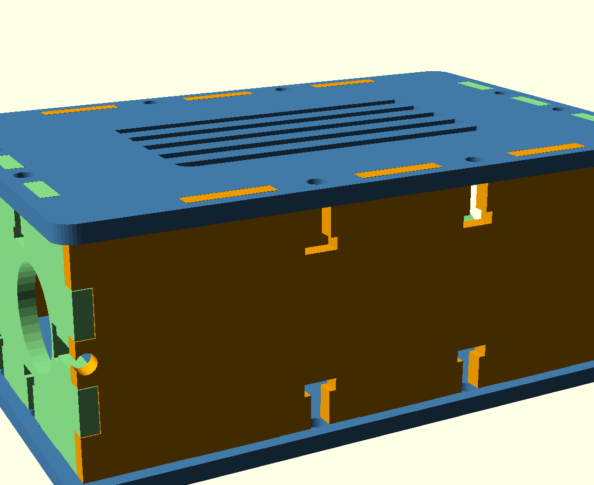
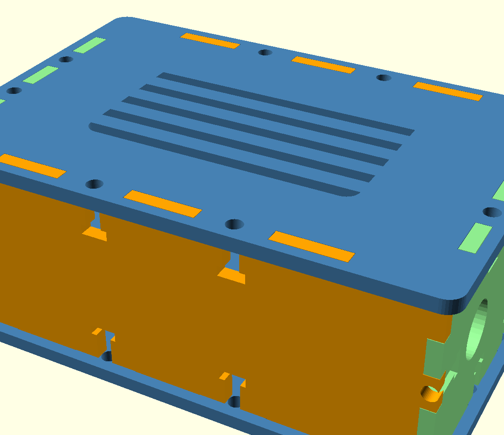
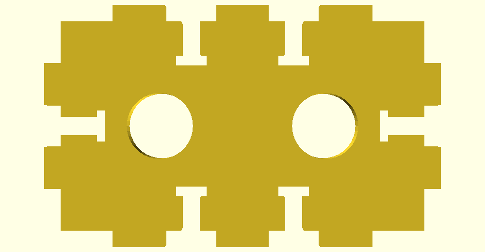

Renders
Assembled (vented top, bolted panels) + a side gland wall showing the two Ø18.4 bores clearing every tab / T-slot.



Specs
| Box | — |
|---|---|
| Construction | — |
| Board + risers | — |
| Gland bores | — |
| Cable routing | — |
| Print set | — |
Design checks
Confirm vs calipers: board size, mount-hole pattern, gland heights, insert Ø (M3 vs M2.5).